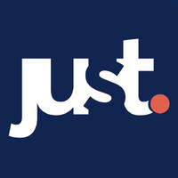
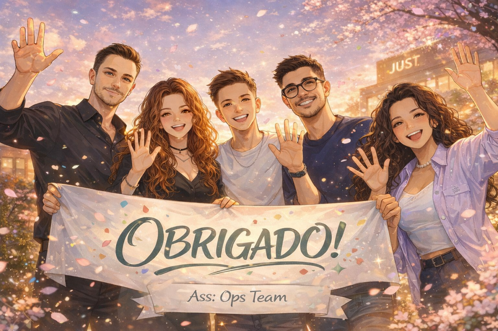

OperaçõesProcesso oficial de atendimento da Just — rastreabilidade, documentação obrigatória e clareza de responsabilidade do primeiro contato ao fechamento.
Este workflow estabelece o processo oficial de atendimento e resolução de problemas via Slack na Just. O objetivo é assegurar rastreabilidade ponta a ponta, documentação obrigatória das resoluções e responsabilidade clara sobre quem conduz cada demanda até o encerramento.
Toda resolução documentada alimenta a base de conhecimento que vai treinar uma IA para, no futuro, automatizar o suporte com um bot capaz de resolver demandas com o mesmo padrão do time.
Uma frente dedicada a clientes em implantação (ON) e três níveis para clientes em operação. Hugo e Dane atuam tanto em N1 quanto em N2 — o que define o nível é a característica da demanda.
Interlocutora única durante o onboarding (até 90 dias).
Triagem, classificação e resolução de demandas operacionais.
Investigação técnica de bugs, banco de dados e código.
Apoio técnico avançado — atua, documenta, nunca finaliza.
Quem escala para o N3 é o dono da demanda e a conduz até o encerramento. O N3 nunca finaliza um chamado — quem dá o ✅ no Slack é sempre quem escalou (N1 ou N2), após validar que o problema foi de fato resolvido. A planilha, porém, é preenchida por quem resolveu tecnicamente — se foi o N3 quem aplicou a correção, é o N3 quem documenta a solução.
Cliente preenche o formulário no Slack. O Workflow Builder envia automaticamente a demanda para a planilha.
O N1 classifica prioridade (P1/P2/P3) e identifica se é dúvida operacional ou problema técnico.
O N2 investiga logs, banco, código e configurações. Resolve sozinho ou aciona o N3 mantendo a propriedade da demanda.
N2 repassa a planilha para o N3. O engenheiro executa a correção (hotfix, deploy, ajuste de infra) e preenche ele mesmo a solução na planilha, descrevendo de forma técnica e minuciosa tudo o que foi feito. Em seguida reporta na thread.
Quem resolveu de fato o problema é quem preenche a planilha — seja N1, N2, N3 ou ON. Quem escalou valida a resolução e marca ✅ no Slack. Sem documentação técnica minuciosa = chamado aberto.
Prazos por prioridade aplicáveis a todos os clientes da Just.
Quem preenche a planilha é quem resolveu de fato o problema — não quem escalou. O registro precisa ser técnico, minucioso e reprodutível: outra pessoa do time deve conseguir aplicar a mesma solução lendo apenas a planilha.
WHERE completo, trechos de código alterados (arquivo + linha), endpoints chamados, parâmetros enviados, deploys realizados (branch, commit, ambiente), flags ativadas.Descrições genéricas ("ajustado no banco", "corrigido no código", "resolvido com o cliente") são consideradas registro inválido e bloqueiam o fechamento do chamado.
Abrir Planilha de Controle de Resoluções →A planilha é a ferramenta atual em caráter temporário. Estamos avaliando plataformas dedicadas — e cada solução bem documentada hoje é dado de treinamento amanhã.
Registro disciplinado de cada resolução na planilha, com descrição completa de causa raiz e solução.
IA atuando como copiloto do Suporte: sugere soluções para demandas semelhantes às já resolvidas.
Bot de suporte autônomo, capaz de resolver demandas recorrentes e substituir o atendimento humano em casos mapeados.
Emojis padronizados para sinalizar status de chamados em qualquer thread.
Chamado visto. Use assim que o N1 identificar o ticket.
Apenas após resolver E preencher a planilha.
Passou para o próximo nível (N1→N2 ou N2→N3).
Problema com impacto total — máxima prioridade.
Parâmetros objetivos para mover o cliente de ON (implantação) para o Suporte (N1/N2).
Todo cliente novo permanece obrigatoriamente com a Bruna por no mínimo 1 mês, sem migração automática.
Após o 1º mês, se por 2 semanas seguidas ≤20% das demandas ficarem na Bruna e ≥80% no Suporte, migração imediata.
Caso o gatilho não dispare, a migração ocorre compulsoriamente em 90 dias — limite absoluto.

Dica: pressione G para abrir • 1-9 para pular direto • Esc para fechar